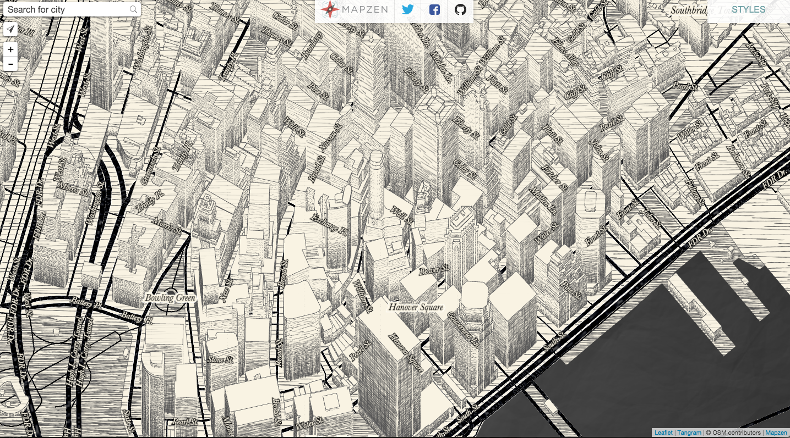

La révolution OpenStreetMap
.
OpenStreetMap est le wikipedia des cartes
Tout le monde peut l'utiliser
Tout le monde peut l'éditer
Démonstration
En fait, OpenStreetMap n'est pas une carte.
OSM c'est des données
Beaucoup de données
Beaucoup, beaucoup, de données
Dans OSM, il y'a aussi du code et des outils
C'est la stack OSM
= un écosystème Open Source (principalement)
Réutilisable :
Mapnik, Overpass, PostgreSQL, JOSM, mod_tile, etc...
OSM, c'est aussi des gens ©
Plein de gens
Qui se retrouvent dans des cartoparties
là au Japon, après le tsunami

à Cergy
et au "State of the Map"
:
Lui c'est Steve Coast, il a crée OSM
Bref
Des données (libres)
Du code (libre)
Des gens
= carte du monde
= la carte du monde la plus complète de l'histoire de l'humanité
une carte ?
Pas forcément celle là
"Elle est moche"
Pas faux.
(c'est pas le but)
Mais OSM, c'est des cartes :
Pinterest
Stamen Watercolor
Tangram
Tangram
:)
À quoi ça sert?
le problème avec Google Maps (et autres)
données copyrightées
stack closed source
une carte inégalitaire
la neutralité
la neutralité politique
la neutralité commerciale
interlude Disney
Comment ça marche?
le modèle de données d'OSM est
simple
nodes
ways
relations
et enfin: tags
Erik Escoffier. Screens du
wiki Mapbox. Cette presentation est sous CC-BY-SA